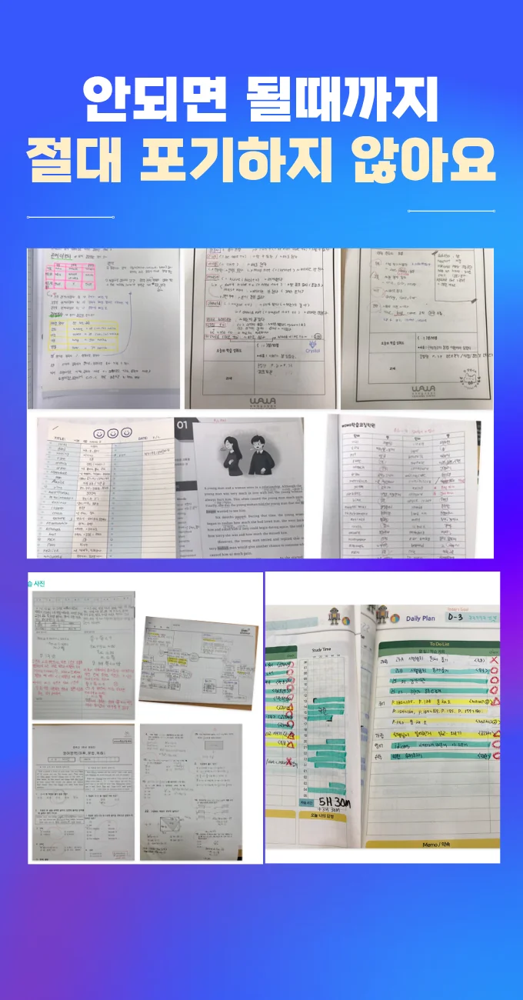

학부모님은 자녀의 목표를 먼저 생각해요. 부모는 주변 교육 환경을 살펴보면서 선택 기준을 정해요. 아이는 스스로 공부 스타일을 파악하고 원하는 방식을 알려요. 전문가들은 강사의 지도 방법과 피드백 체계를 중점적으로 체크해요. 지역에서는 이곡동 와와코칭학습센터 접근성과 안전성을 고려해요. 이곡동은 아파트와 단독주택이 혼합된 주거지역이라 이동 거리와 교통 편의성이 중요한 요소예요. 최종 결정은 체험 수업 후 만족도와 비용 효율성을 비교하면서 내린다 해요.
이곡동은 초중고 학생들이 다양한 학습 환경에 노출돼 있어 연령별 특성이 뚜렷해요. 초등 저학년은 교실마다 비상 조명이 설치돼 안전성을 강조하면서 집중력이 높아지는 경향이 있어요. 초등 고학년은 스스로 학습 계획을 세우는 능력이 점점 향상돼 자립적인 공부 습관을 키우는 것이 중요해요. 중학생은 단원 간 개념 연결을 시각화하는 수업을 통해 이해도가 깊어지고, 고등학생은 과제량이 많지만 자기주도성이 부족한 경우가 많아 체계적인 관리가 필요해요. 전체 학년에서는 시험 대비 요약 노트를 배포해 복습 효율을 높이는 전략이 효과적이에요
와와학습코칭센터는 참여 발언 횟수를 기록해 학습 습관을 시각화해요. 주 대상은 자기주도 학습에 어려움을 느끼는 초중고 학생이며, 커리큘럼은 기본 개념 탐구 실전 적용 피드백 순환 구조로 설계돼요. 바이올린 초급 과정은 180,000원, 중급은 230,000원으로 가격 투명성을 유지하고 있어요. 시간표에는 빈 시간도 표시해 자유 학습 시간을 확보하도록 도와요. 연립부등식 풀이를 통해 논리 전개 능력을 강화하는 프로그램도 포함돼요.
| 학원명 | 와와학습코칭학원 |
| 수강료 | 바이올린초급 180,000원 | 바이올린중급 230,000원 |
CURRICULUM
이 이곡동 와와코칭학습센터의 커리큘럼은 개별 진도 질문을 자유롭게 할 수 있는 환경을 제공해요. 수업 중 학생이 이해가 안 되는 부분을 즉시 질문하면 즉각적인 피드백을 통해 개념을 명확히 해요. 시험 직전에는 학습 범위를 확대해 전체적인 문제 유형을 폭넓게 다루고, 실전 감각을 키우도록 돕어요. 매주 진행되는 복습 시간에는 이전에 배운 내용과 연결해 새로운 지식을 통합하고, 누적 체크리스트를 활용해 학습량을 시각적으로 관리해요. 이러한 구조는 꾸준한 과정 속에서 성취감을 느끼게 해 주어 학습 지속성을 높여요.
수학 고난도 문항을 풀 때 문제 조건을 놓치는 경우가 많아요. 마지막 문제까지 집중을 유지하려면 단계별 체크리스트를 활용해 실수를 최소화할 수 있습니다. 목표별 학습 자료 선택 능력을 기르면 효율적인 공부가 가능해지고, 잘못된 습관을 바로잡는 데 도움이 됩니다.
학습 전략은 교사의 수업 스타일을 표준화하지 않고 다양성을 인정하는 운영 방식을 기반으로 합니다. 유형별 분류 기준과 반 운영 방식을 소개하며, 단원별 구획보다 전체 흐름에 집중해 성과를 도출합니다. 특히 중학생을 대상으로 전과목 통합 관리 프로그램을 제공해 논제에 맞는 글 구성 능력을 강화합니다.
중학교 2학년으로 문제 풀이에는 꾸준히 성과를 내지만 응용 문제에서는 어려움을 겪는 학생에게 특히 적합해요. 모의고사를 시험처럼 치르지 않아도 실전 감각을 키울 수 있도록 단계별 피드백과 맞춤형 과제 제공이 큰 도움이 돼요. 또한, 학습 목표를 구체적으로 설정하고 꾸준히 점검하는 습관을 길러 장기적인 성장으로 이어지게 해요.
이곡동 와와코칭학습센터을 다니면서 질문하는 것이 부끄럽지 않다고 느꼈어요. 처음엔 선생님 앞에서 말하는 게 망설여졌지만, 매 수업마다 자유롭게 질문할 수 있는 분위기가 조성돼 자연스럽게 말하게 되었어요. 가끔은 이곡동 와와코칭학습센터에 가는 것이 귀찮다고 생각했지만, 스스로 목표를 설정하고 달성했을 때 큰 보람을 느꼈어요. 일지를 쓰면서 오늘의 목표와 성취를 기록하고, 그 결과를 보며 성장하는 걸 체감했어요. 친구와 짧은 대화를 나누는 동안 공부에 대한 태도가 긍정적으로 변했고, 스터디 모임을 통해 자기 주도 학습 능력이 크게 향상돼요.